Hi, my name is
Igirimbabazi Kayumba Regis
Computer Engineering Student
I'm a computer engineering student specializing in cybersecurity. I have experience in IT support, hardware & software troubleshooting/repair, and customer support.
About
I'm Regis, a computer engineering student at Vistula University in Warsaw.
I studied computer systems and networking at technical high school in Kigali, then moved to Warsaw for my degree. I am focused on cybersecurity: protecting networks with firewall rules, access control lists and log monitoring, on top of routing, switching and VLAN segmentation on Cisco equipment.
I have also worked in IT support and customer service, so I'm comfortable fixing technical problems and working with the people affected by them.
Technical Capabilities
Cisco IOS, OSPF, HSRP, SVIs, VLANs, EtherChannel, VoIP
Cisco ASA Firewall, Access Control Lists (ACL), BPDUGuard, Syslog
Windows & Linux Installation, Active Directory (coursework), Hardware Diagnostics
HTML5, CSS3, JavaScript (basics)
Experience
Junior IT Support / HR Assistant at Rwanda Agriculture Board
Supported office staff with everyday IT problems so they could get back to work quickly.
- Diagnosed and fixed hardware and software issues on staff Windows laptops and desktops, and installed Windows when needed.
- Helped staff restore access to their accounts when they forgot their passwords.
- Kept the office network stable and fixed printer problems.
- Provided clerical support to the HR team.
- Skills: Windows troubleshooting, hardware and software support, password resets, printer support, network troubleshooting.
Customer Service Specialist at Kin Clothing Store
Helped customers in the store find what they needed and made sure they left happy.
- Talked with customers to understand what they were looking for and helped them choose.
- Handled customer inquiries, complaints and order processing.
- Served customers in English, French and Kinyarwanda.
- Kept in touch with customers after their purchase in case they had any problems with their products.
Sales Associate at Kin Electronic Shop
Sold laptops and phones, and kept the shop's devices in working order.
- Advised customers on laptops and phones, handled inquiries and processed transactions.
- Diagnosed and repaired faulty laptops, phones and accessories in stock, getting them back to working condition and cutting stock losses.
- Installed Windows, updated outdated laptops and installed missing drivers so they ran properly.
- Installed basic software for customers, such as Microsoft Office.
- Kept in touch with customers in case they had any problems with their products.
IT Support Technician (Intern) at Vision Technologies Co. Ltd
Hands-on IT internship, done as part of my technical high school studies.
- Installed and configured CCTV cameras with an NVR, and set up the network behind them.
- Troubleshot, repaired and maintained laptops, desktops, printers and photocopiers.
- Did network cabling, making and crimping RJ45 Ethernet cables.
Projects
Cisco Enterprise Multi-Floor Topology
A full enterprise subnetted architecture designed and simulated in Cisco Packet Tracer. Features HSRP router redundancy, OSPF routing, VLAN segmentation across floors, Cisco ASA Firewall zone separation, VoIP services, and wireless client association.
Security Sandbox
Education
Specializing in cybersecurity. Coursework focused on cybersecurity and computer networks: how networks are designed and configured, how they are attacked, and how to secure them.

Coursework focused on network configuration, routing, switching and VLANs. Also worked with Windows Server, operating systems (Ubuntu and Kali Linux) and virtual machines, set up CCTV cameras, and took an introduction to cybersecurity.